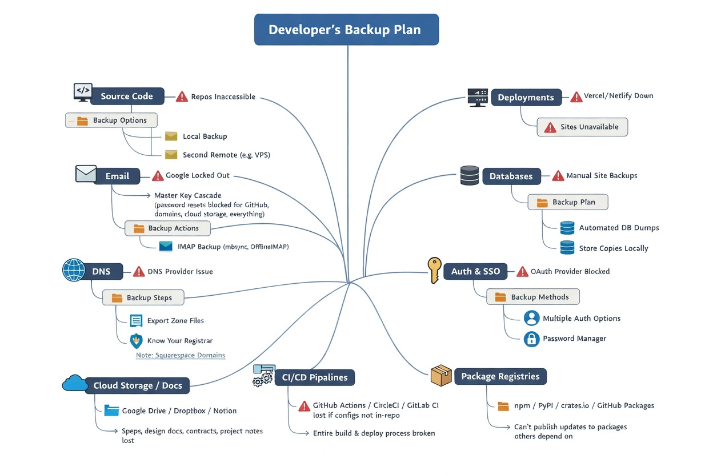

The Slow Handoff
Nobody wakes up one day and decides to hand their entire professional existence to a handful of companies. It happens gradually. You sign up for GitHub because that's where the repos are. You use Gmail because it's free and it works. You point your domain at Cloudflare because the performance is good and the free tier is generous. You deploy on Vercel or Netlify because the DX is great and you don't want to think about servers.
Each individual decision is perfectly reasonable. But step back and look at what you've built: a career that runs entirely on platforms where you are a user, not an owner. Every one of those services has a terms of service agreement that gives them the right to change the rules, raise prices, or shut you down — and most of them can do it without warning.
This isn't theoretical. In the last few years we've seen GitHub suspend developer accounts with no notice and no appeal path for months. Google has shut down entire Workspace accounts over automated policy violations, taking email, Drive, and calendar with them. Cloudflare has dropped customers from their network for content decisions. Heroku killed their free tier and gave everyone a few months to figure it out. Services you build your workflow around can change overnight, and you have no seat at the table when those decisions get made.
The Audit Nobody Wants to Do
Here's an exercise that will either bore you or terrify you. Sit down and list every service that, if it disappeared tomorrow, would break something important in your life as a developer. Not "would be annoying" — would actually break something. Can't push code. Can't receive email. Can't deploy. Can't resolve your domain. Can't log in to other services because SSO goes through one provider.
For most developers, that list looks something like this:

The full picture. Tap any tile below to dig into the details.
Count the red. That's your actual exposure. Most developers have five or six critical single points of failure and no fallback for any of them.
This Isn't About Self-Hosting Everything
Let's be clear about something before this turns into a "just run your own mail server" lecture. That's not the point. Running your own mail server is a nightmare and almost nobody should do it. Running your own Kubernetes cluster to replace Vercel is a full-time job. The cloud exists for good reasons, and using it isn't the problem.
The problem is having no backup plan at all.
There's a huge gap between "I run everything on my own hardware" and "I have zero copies of anything outside of platforms I don't control." Most developers are camped at the second extreme without realizing it. The goal isn't self-hosting purity — it's making sure that when (not if) a platform does something you didn't expect, you have options.
What "Taking It Back" Actually Looks Like
You just saw the map. Every tile has concrete actions — most of them are quick wins. The pattern is the same across all of them: keep a local copy, know how to move, and don't let one provider be a single point of failure. You don't need to do all ten this week. Start with source code and email — those two are the highest impact and the easiest to fix. We wrote about ForkOff in our last post if you want to knock out the code backup in five minutes.
The 3-2-1 Rule Still Works
This isn't new wisdom. The backup industry has been saying it for decades: keep three copies of anything important, on two different types of media, with one copy offsite. Developers know this rule and then proceed to keep exactly one copy of everything, hosted by someone else, with no local backup at all.
Adapting it for a modern dev setup might look like: your code lives on GitHub (copy one), gets mirrored to a local machine or NAS nightly (copy two), and gets rsynced to a cheap VPS or an encrypted cloud storage bucket monthly (copy three). That's not expensive. That's not complicated. That's an afternoon of setup and then you forget about it.
The real cost isn't the disaster — it's finding out during the disaster that you have no options. A suspended account is survivable if you have copies of your work. It's catastrophic if you don't.
Start Small
You don't need to do all of this today. Pick the thing that scares you most from that table and fix it this week. For most people, that's either source code or email. Clone your repos. Set up a mail backup. That alone puts you ahead of most developers who are running their entire career on faith that nothing will ever go wrong.
Then, over the next few weeks, work through the rest. Export your DNS records. Dump your databases. Document your secrets somewhere that isn't a platform dashboard. None of this is glamorous work, and none of it will make for good tweets. But the developer who has a local copy of everything sleeps differently than the one who doesn't.
You don't have to leave the cloud. You just have to stop pretending the cloud will always be there for you.
If you want to start with the easiest win, check out ForkOff — it automates daily git mirrors of your entire GitHub account, and it takes about five minutes to set up.